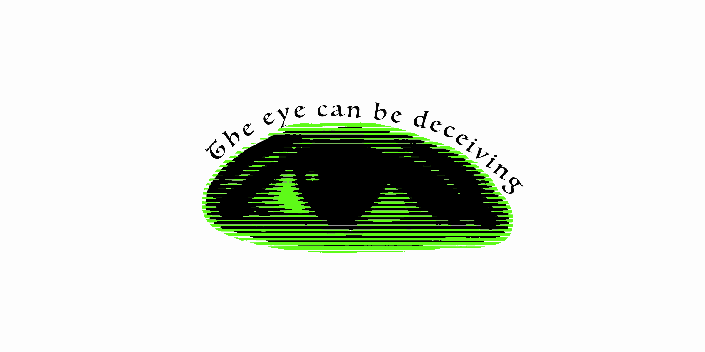
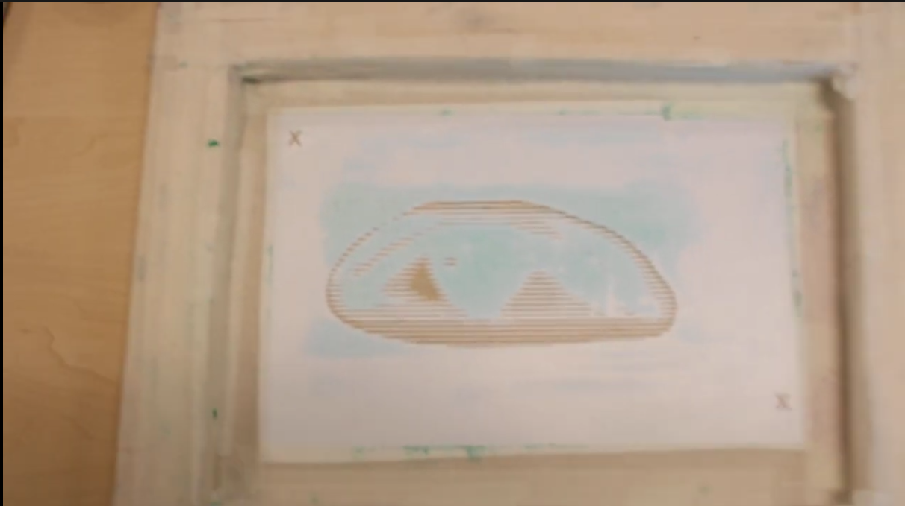

In the screen printing project, we were told to make designs that we would later print out. These designs had to have a meaning behind them and they could either talk about something in the real world like gambling or even some wars that are going on in the world. We first thought of the designs we would want to print out. We used photoshop to make sketches of the designs, which would later be improved in our final design. My design would talk about politics or humans in general. It would say “The eye can be deceiving,” as many people determine people based on the first impression or how they “look” at them.

We first started off by picking the size that we wanted the boards to be, after we picked the size. We then started to measure how big we wanted the image and how much it would cover up, we made a box around the eye measuring the size of the eye and box, then from the box we made another line going around which would be the width of the outer edges of the screen, and measured what the width would be and how far away we want the outer edge after the measurements were done we then started making the wood for the final frame. Then we put a vinyl around the frame to avoid ink from dripping out. After the vinyl was secured we then put a paper on top of the vinyl and heated the image into the vinyl, after the heating was done the image would show on the vinyl and you could see it inside the frame.

For my 21st Century Skill is Creativity and innovation, as during this whole project, we were told to think of a design that would express many things and would apply to the real world. We were told to make our own original design that we would later print out and put onto screen frames, or that we could also put onto shirts, cloth, paper, and boxes.